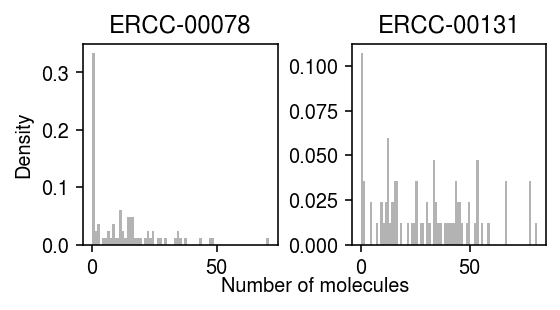
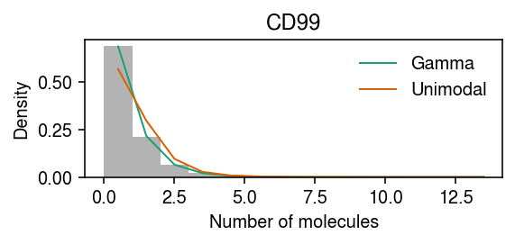
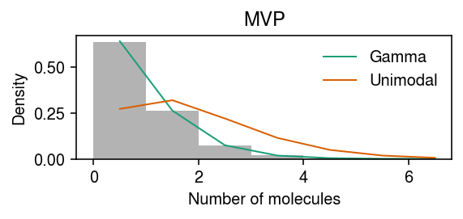

Marginal log likelihood comparison of expression models
Table of Contents
Introduction
We previously used a goodness of fit test and out-of-sample (marginal) log likelihood to assess whether the data were adequately described by a given expression model. Here, we compute the in-sample marginal log likelihood, in order to make direct comparisons between expression models.
Setup
import anndata import numpy as np import os import pandas as pd import scanpy as sc import scmodes import scipy.stats as st
%matplotlib inline %config InlineBackend.figure_formats = set(['retina'])
import matplotlib.pyplot as plt plt.rcParams['figure.facecolor'] = 'w' plt.rcParams['font.family'] = 'Nimbus Sans'
Results
Data
Prepare the data in h5ad.
def read_chromium(sample): x = sc.read('/project2/mstephens/aksarkar/projects/singlecell-modes/data/negative-controls/svensson_chromium_control.h5ad') x = x[x.obs['sample'] == sample,x.var.filter(like='ERCC', axis='index').index] sc.pp.filter_genes(x, min_cells=1) x.var = x.var.reset_index() return x def read_dropseq(): x = sc.read('/project2/mstephens/aksarkar/projects/singlecell-modes/data/negative-controls/macosko_dropseq_control.h5ad') x = x[:,x.var.filter(like='ERCC', axis='index').index] sc.pp.filter_genes(x, min_cells=1) x.var = x.var.reset_index() return x def read_indrops(): x = sc.read('/project2/mstephens/aksarkar/projects/singlecell-modes/data/negative-controls/klein_indrops_control.h5ad') x = x[:,x.var.filter(like='ERCC', axis='index').index] sc.pp.filter_genes(x, min_cells=1) x.var = x.var.reset_index() return x def read_gemcode(): x = sc.read('/project2/mstephens/aksarkar/projects/singlecell-modes/data/negative-controls/zheng_gemcode_control.h5ad') x = x[:,x.var.filter(like='ERCC', axis='index').index] sc.pp.filter_genes(x, min_cells=1) x.var = x.var.reset_index() return x def _read_10x(k, return_df=False, min_detect=0.01): x = scmodes.dataset.read_10x(f'/project2/mstephens/aksarkar/projects/singlecell-ideas/data/10xgenomics/{k}/filtered_matrices_mex/hg19/', return_adata=not return_df, return_df=return_df, min_detect=min_detect) x.var.columns = ['gene', 'name'] return x def _mix_10x(k1, k2, min_detect=0.01, return_y=False, chunk=None, chunksize=500): x1 = _read_10x(k1, min_detect=0) x2 = _read_10x(k2, min_detect=0) x = x1.concatenate(x2) sc.pp.filter_genes(x, min_cells=min_detect * x.shape[0]) x.obs['size'] = x.X.sum(axis=1).A.ravel() if chunk is None: return x else: return x[:,chunk * chunksize:(chunk + 1) * chunksize] def _cd8_cd19_mix(**kwargs): return _mix_10x('cytotoxic_t', 'b_cells', **kwargs) def _cyto_naive_mix(**kwargs): return _mix_10x('cytotoxic_t', 'naive_t', **kwargs) def read_ipsc(chunk=None, chunksize=500): x = anndata.read_h5ad('/project2/mstephens/aksarkar/projects/singlecell-ideas/data/ipsc/ipsc.h5ad') x.obs['size'] = x.X.sum(axis=1).A.ravel() if chunk is None: return x else: return x[:,chunk * chunksize:(chunk + 1) * chunksize] def read_liver(chunk=None, chunksize=500): x = anndata.read_h5ad('/project2/mstephens/aksarkar/projects/singlecell-ideas/data/human-cell-atlas/liver-caudate-lobe/liver-caudate-lobe.h5ad') x.obs['size'] = x.X.sum(axis=1).A.ravel() if chunk is None: return x else: return x[:,chunk * chunksize:(chunk + 1) * chunksize] def read_kidney(chunk=None, chunksize=500): x = anndata.read_h5ad('/project2/mstephens/aksarkar/projects/singlecell-ideas/data/human-cell-atlas/kidney/kidney.h5ad') x.obs['size'] = x.X.sum(axis=1).A.ravel() if chunk is None: return x else: return x[:,chunk * chunksize:(chunk + 1) * chunksize] def read_brain(chunk=None, chunksize=500): x = anndata.read_h5ad('/project2/mstephens/aksarkar/projects/singlecell-ideas/data/gtex-droncseq/gtex-droncseq.h5ad') sc.pp.filter_genes(x, min_counts=.01 * x.shape[0]) x.obs['size'] = x.X.sum(axis=1).A.ravel() if chunk is None: return x else: return x[:,chunk * chunksize:(chunk + 1) * chunksize] def read_retina(chunk=None, chunksize=500): x = anndata.read_h5ad('/project2/mstephens/aksarkar/projects/singlecell-ideas/data/human-cell-atlas/adult-retina/adult-retina.h5ad') query = x.obs['donor_organism.provenance.document_id'] == '427c0a62-9baf-42ab-a3a3-f48d10544280' y = x[query] sc.pp.filter_genes(y, min_cells=.01 * y.shape[0]) y.obs['size'] = y.X.sum(axis=1).A.ravel() if chunk is None: return y else: return y[:,chunk * chunksize:(chunk + 1) * chunksize] def read_pbmc_10k_v3(chunk=None, chunksize=500): x = anndata.read_h5ad('/scratch/midway2/aksarkar/modes/10k_pbmc_v3.h5ad') sc.pp.filter_genes(x, min_cells=0.01 * x.shape[0]) x.obs['size'] = x.X.sum(axis=1).A.ravel() if chunk is None: return x else: return x[:,chunk * chunksize:(chunk + 1) * chunksize] data = { 'dropseq': read_dropseq, 'indrops': read_indrops, 'chromium1': lambda: read_chromium('20311'), 'chromium2': lambda: read_chromium('20312'), 'gemcode': read_gemcode, 'cytotoxic_t': lambda: _read_10x('cytotoxic_t'), 'b_cells': lambda: _read_10x('b_cells'), 'ipsc': read_ipsc, 'cytotoxic_t-b_cells': _cd8_cd19_mix, 'cytotoxic_t-naive_t': _cyto_naive_mix, 'pbmc_10k_v3': read_pbmc_10k_v3, 'liver-caudate-lobe': read_liver, 'kidney': read_kidney, 'brain': read_brain, 'retina': read_retina, } chunksize = 500 chunks = { 'brain': 11744 // chunksize, 'cytotoxic_t-b_cells': 6647 // chunksize, 'cytotoxic_t-naive_t': 6246 // chunksize, 'ipsc': 9957 // chunksize, 'kidney': 15496 // chunksize, 'liver-caudate-lobe': 3181 // chunksize, 'pbmc_10k_v3': 12144 // chunksize, 'retina': 10047 // chunksize, } control = list(data.keys())[:5] non_control = list(data.keys())[5:]
Report the dimensions of each data set.
pd.DataFrame([data[k]().shape for k in data], columns=['num_samples', 'num_genes'], index=data.keys())
num_samples num_genes dropseq 84 81 indrops 953 103 chromium1 2000 88 chromium2 2000 88 gemcode 1015 91 cytotoxic_t 10209 6530 b_cells 10085 6417 ipsc 5597 9957 cytotoxic_t-b_cells 20294 6647 cytotoxic_t-naive_t 20688 6246 pbmc_10k_v3 11769 12144 liver-caudate-lobe 8856 16200 kidney 11233 15496 brain 14963 11744 retina 21285 10047
Estimate marginal log likelihood
Estimate the marginal likelihood for each data set, for each gene, for each family of expression models.
sbatch --partition=broadwl -n1 -c28 --exclusive --job-name=llik --time=24:00:00 -a 45-58 #!/bin/bash source activate scmodes python <<EOF <<imports>> import anndata import multiprocessing as mp import os <<data>> tasks = [(m, d) for m in ('point', 'gamma', 'point_gamma', 'unimodal', 'npmle') for d in data if m not in ('unimodal', 'npmle') or d not in chunks] m, d = tasks[int(os.environ['SLURM_ARRAY_TASK_ID'])] with mp.Pool() as pool: x = data[d]() res = scmodes.benchmark.evaluate_llik(x, pool=pool, methods=[m]) res.to_csv(f'/scratch/midway2/aksarkar/modes/llik/{d}-{m}.txt.gz', compression='gzip', sep='\t') EOF
Fit non-parametric expression models serially for control data, to avoid memory issues.
for d in control: (scmodes.benchmark.evaluate_llik(data[d](), methods=['npmle'], max_grid_updates=20, tol=1e-5) .to_csv(f'/scratch/midway2/aksarkar/modes/llik/{d}-npmle.txt.gz', compression='gzip', sep='\t'))
Shard data sets to fit unimodal/non-parametric expression models within the
midway2 time/memory limits.
sbatch --partition=broadwl -n1 -c28 --exclusive --job-name=llik --time=4:00:00 -a 0-146%16 #!/bin/bash source activate scmodes python <<EOF <<imports>> import multiprocessing as mp import os <<data>> tasks = [(m, d, c) for m in ('unimodal', 'npmle') for d in chunks for c in range(chunks[d])] m, d, c = tasks[int(os.environ['SLURM_ARRAY_TASK_ID'])] with mp.Pool(maxtasksperchild=1) as pool: x = data[d](chunk=c) res = scmodes.benchmark.evaluate_llik(x, s=x.obs['size'], pool=pool, methods=[m]) res.to_csv(f'/scratch/midway2/aksarkar/modes/llik/{d}-{m}-{c}.txt.gz', compression='gzip', sep='\t') EOF
Move the results to permanent storage.
rsync -au /scratch/midway2/aksarkar/modes/llik/ /project2/mstephens/aksarkar/projects/singlecell-modes/data/llik/
Combine the sharded results.
for m in ('unimodal', 'npmle'): for k in chunks: if os.path.exists(f'/project2/mstephens/aksarkar/projects/singlecell-modes/data/llik/{k}-{m}-0.txt.gz'): (pd.concat([pd.read_csv(f'/project2/mstephens/aksarkar/projects/singlecell-modes/data/llik/{k}-{m}-{i}.txt.gz', index_col=0, sep='\t') for i in range(chunks[k])]) .to_csv(f'/project2/mstephens/aksarkar/projects/singlecell-modes/data/llik/{k}-{m}.txt.gz', sep='\t'))
Read the results.
llik = (pd.concat( { k: pd.concat([ pd.read_csv(f'/project2/mstephens/aksarkar/projects/singlecell-modes/data/llik/{k}-{m}.txt.gz', index_col=0, sep='\t') for m in ('point', 'gamma', 'point_gamma', 'unimodal', 'npmle') if os.path.exists(f'/project2/mstephens/aksarkar/projects/singlecell-modes/data/llik/{k}-{m}.txt.gz')]) for k in data }) .reset_index(level=0) .rename({'level_0': 'dataset'}, axis=1))
Application to control data sets
For each control data set, for each expression model, report the number of genes which have improvement in marginal log likelihood above some threshold over the point mass expression model.
thresh = 10 res = dict() for k, g in llik[llik['dataset'].isin(control)].groupby('dataset'): query = g.pivot_table(index='gene', columns='method', values='llik') res[k] = (query.sub(query['point'], axis=0) > thresh).sum(axis=0) res = (pd.concat(res) .reset_index() .rename({'level_0': 'dataset'}, axis=1) .pivot_table(index='dataset', columns='method') [0]) del res['point'] res[['gamma', 'point_gamma', 'unimodal', 'npmle']]
method gamma point_gamma unimodal npmle dataset chromium1 15 13 17 17 chromium2 48 48 51 52 dropseq 77 77 78 78 gemcode 52 52 56 56 indrops 4 4 4 4
For each control data set, for each expression model, report the number of genes which have improvement in marginal log likelihood above some threshold over the Gamma expression model.
thresh = 10 res = dict() for k, g in llik[llik['dataset'].isin(control)].groupby('dataset'): query = g.pivot_table(index='gene', columns='method', values='llik') res[k] = (query.sub(query['gamma'], axis=0) > thresh).sum(axis=0) res = (pd.concat(res) .reset_index() .rename({'level_0': 'dataset'}, axis=1) .pivot_table(index='dataset', columns='method') [0]) del res['gamma'] res[['point', 'point_gamma', 'unimodal', 'npmle']]
method point point_gamma unimodal npmle dataset chromium1 0 0 8 8 chromium2 0 0 4 5 dropseq 0 2 6 20 gemcode 1 1 53 53 indrops 1 0 2 2
Find the genes where a point-Gamma model improved over a Gamma model.
temp = dict() for k, g in llik[llik['dataset'].isin(control)].groupby('dataset'): query = g.pivot_table(index='gene', columns='method', values='llik') temp[k] = query.loc[query['point_gamma'] > query['gamma'] + thresh] query = (pd.concat(temp) .reset_index() .rename({'level_0': 'dataset'}, axis=1) [['dataset', 'gene', 'point', 'gamma', 'point_gamma', 'unimodal', 'npmle']]) query
method dataset gene point gamma point_gamma \ 0 dropseq ERCC-00078 -765.076024 -279.353443 -264.522869 1 dropseq ERCC-00131 -723.520929 -356.755781 -341.742929 2 gemcode ERCC-00002 -6108.645264 -6148.879840 -6132.663007 method unimodal npmle 0 -263.565367 -261.356008 1 -347.518213 -337.359459 2 -5944.693604 -5944.434618
x = data['dropseq']() plt.clf() fig, ax = plt.subplots(1, 2) fig.set_size_inches(4, 2.5) for (k, row), a in zip(query.iterrows(), ax): y = x[:,x.var['index'] == row['gene']].X.A.ravel() a.hist(y, bins=np.arange(y.max() + 2), density=True, color='0.7') a.set_title(k) ax[0].set_ylabel('Density') a = fig.add_subplot(111, frameon=False, xticks=[], yticks=[]) a.set_xlabel('Number of molecules', labelpad=16) fig.tight_layout()

For each control data set, for each expression model, report the number of genes which have improvement in marginal log likelihood above some threshold over the unimodal expression model.
thresh = 10 res = dict() for k, g in llik[llik['dataset'].isin(control)].groupby('dataset'): query = g.pivot_table(index='gene', columns='method', values='llik') res[k] = (query.sub(query['unimodal'], axis=0) > thresh).sum(axis=0) res = (pd.concat(res) .reset_index() .rename({'level_0': 'dataset'}, axis=1) .pivot_table(index='dataset', columns='method') [0]) del res['unimodal'] res[['point', 'gamma', 'point_gamma', 'npmle']]
method point gamma point_gamma npmle dataset chromium1 4 4 4 4 chromium2 4 4 5 5 dropseq 0 0 0 1 gemcode 2 2 2 2 indrops 3 3 3 3
Application to biological data sets
For each data set, for each expression model, report the number of genes which have improvement in marginal log likelihood above some threshold over the Gamma expression model.
thresh = 10 res = dict() for k, g in llik[llik['dataset'].isin(non_control)].groupby('dataset'): query = g.pivot_table(index='gene', columns='method', values='llik') res[k] = (query.sub(query['gamma'], axis=0) > thresh).mean(axis=0) res = (pd.concat(res) .reset_index() .rename({'level_0': 'dataset'}, axis=1) .pivot_table(index='dataset', columns='method') [0] [['point', 'point_gamma', 'unimodal', 'npmle']]) res
method point point_gamma unimodal npmle dataset b_cells 0.003740 0.009974 0.097242 0.097709 brain 0.000000 0.025800 0.090003 0.079275 cytotoxic_t 0.003216 0.012711 0.108729 0.109648 cytotoxic_t-b_cells 0.003912 0.038965 0.220099 0.220852 cytotoxic_t-naive_t 0.003522 0.029779 0.224304 0.227666 ipsc 0.000501 0.004308 0.483370 0.000000 kidney 0.000000 0.013791 0.440890 0.120954 liver-caudate-lobe 0.000000 0.001825 0.000000 0.002272 pbmc_10k_v3 0.009717 0.042902 NaN NaN retina 0.016323 0.034836 0.163930 0.165622
For each data set, for each expression model, report the number of genes which have improvement in marginal log likelihood above some threshold over the unimodal expression model.
thresh = 10 res = dict() for k, g in llik[llik['dataset'].isin(non_control)].groupby('dataset'): query = g.pivot_table(index='gene', columns='method', values='llik') if 'unimodal' in query: res[k] = (query.sub(query['unimodal'], axis=0) > thresh).mean(axis=0) res = (pd.concat(res) .reset_index() .rename({'level_0': 'dataset'}, axis=1) .pivot_table(index='dataset', columns='method') [0] [['point', 'gamma', 'point_gamma', 'npmle']]) res
method point gamma point_gamma npmle dataset b_cells 0.000000 0.000000 0.000000 0.000156 brain 0.000000 0.000000 0.000085 0.000937 cytotoxic_t 0.000000 0.000000 0.000000 0.000000 cytotoxic_t-b_cells 0.016398 0.017301 0.018655 0.019859 cytotoxic_t-naive_t 0.042747 0.043228 0.043388 0.040346 ipsc 0.005410 0.006412 0.006512 0.000000 kidney 0.000000 0.047027 0.046903 0.046779 liver-caudate-lobe 0.000000 0.000000 0.000000 0.000000 retina 0.000000 0.000000 0.001095 0.012840
Look at some examples where Gamma did better than unimodal.
temp = dict() for k, g in llik[llik['dataset'].isin(non_control)].groupby('dataset'): query = g.pivot_table(index='gene', columns='method', values='llik') if 'unimodal' in query: temp[k] = query.loc[query['gamma'] > query['unimodal'] + thresh] query = (pd.concat(temp) .reset_index() .rename({'level_0': 'dataset'}, axis=1) [['dataset', 'gene', 'point', 'gamma', 'point_gamma', 'unimodal', 'npmle']]) query.head()
method dataset gene point gamma \ 0 cytotoxic_t-b_cells ENSG00000002586 -18259.939115 -17790.249936 1 cytotoxic_t-b_cells ENSG00000008952 -17087.606931 -17025.500512 2 cytotoxic_t-b_cells ENSG00000013288 -1329.833528 -1323.691783 3 cytotoxic_t-b_cells ENSG00000031003 -1286.253859 -1286.253859 4 cytotoxic_t-b_cells ENSG00000039123 -1318.144540 -1316.522524 method point_gamma unimodal npmle 0 -17790.251826 -17824.162043 -17787.074655 1 -17025.166654 -17271.800610 -17019.154144 2 -1323.740052 -1491.807276 -1382.215672 3 -1284.796148 -1441.539937 -1337.188734 4 -1316.529063 -1463.892207 -1378.415557
dat = data['cytotoxic_t-b_cells']() x = dat[:,dat.var['gene'] == 'ENSG00000002586'].X.A.ravel() s = dat.X.sum(axis=1).A.ravel() y = np.arange(x.max() + 1) pmf = dict() gamma_res = scmodes.ebpm.ebpm_gamma(x, s) pmf['Gamma'] = np.array([scmodes.benchmark.gof._zig_pmf(k, size=s, log_mu=gamma_res[0], log_phi=-gamma_res[1]).mean() for k in y]) unimodal_res = scmodes.ebpm.ebpm_unimodal(x, s) g = np.array(unimodal_res.rx2('fitted_g')) g = g[:,g[0] > 1e-8] a = np.fmin(g[1], g[2]) b = np.fmax(g[1], g[2]) comp_dens_conv = np.array([((st.gamma(a=k + 1, scale=1 / s.reshape(-1, 1)).cdf(b.reshape(1, -1)) - st.gamma(a=k + 1, scale=1 / s.reshape(-1, 1)).cdf(a.reshape(1, -1))) / np.outer(s, b - a)).mean(axis=0) for k in y]) comp_dens_conv[:,0] = st.poisson(mu=s.reshape(-1, 1) * b[0]).pmf(y).mean(axis=0) pmf['Unimodal'] = comp_dens_conv @ g[0]
cm = plt.get_cmap('Dark2') plt.clf() plt.gcf().set_size_inches(4, 2) plt.hist(x, bins=y, color='0.7', density=True) for i, k in enumerate(pmf): plt.plot(y + 0.5, pmf[k], lw=1, c=cm(i), label=k) plt.legend(frameon=False) plt.xlabel('Number of molecules') plt.ylabel('Density') plt.title(dat.var.loc[dat.var['gene'] == 'ENSG00000002586','name'][0]) plt.tight_layout()

dat = data['ipsc']() x = dat[:,dat.var['index'] == 'ENSG00000013364'].X.A.ravel() s = dat.obs['size'].values.ravel() y = np.arange(x.max() + 1) pmf = dict() gamma_res = scmodes.ebpm.ebpm_gamma(x, s) pmf['Gamma'] = np.array([scmodes.benchmark.gof._zig_pmf(k, size=s, log_mu=gamma_res[0], log_phi=-gamma_res[1]).mean() for k in y]) unimodal_res = scmodes.ebpm.ebpm_unimodal(x, s) g = np.array(unimodal_res.rx2('fitted_g')) g = g[:,g[0] > 1e-8] a = np.fmin(g[1], g[2]) b = np.fmax(g[1], g[2]) comp_dens_conv = np.array([((st.gamma(a=k + 1, scale=1 / s.reshape(-1, 1)).cdf(b.reshape(1, -1)) - st.gamma(a=k + 1, scale=1 / s.reshape(-1, 1)).cdf(a.reshape(1, -1))) / np.outer(s, b - a)).mean(axis=0) for k in y]) comp_dens_conv[:,0] = st.poisson(mu=s.reshape(-1, 1) * b[0]).pmf(y).mean(axis=0) pmf['Unimodal'] = comp_dens_conv @ g[0]
cm = plt.get_cmap('Dark2') plt.clf() plt.gcf().set_size_inches(4, 2) plt.hist(x, bins=y, color='0.7', density=True) for i, k in enumerate(pmf): plt.plot(y + 0.5, pmf[k], lw=1, c=cm(i), label=k) plt.legend(frameon=False) plt.xlabel('Number of molecules') plt.ylabel('Density') plt.title(dat.var.loc[dat.var['index'] == 'ENSG00000013364','name'][0]) plt.tight_layout()

For each data set, for each expression model, report the number of genes which have improvement in marginal log likelihood above some threshold over the non-parametric expression model.
thresh = 10 res = dict() for k, g in llik[llik['dataset'].isin(non_control)].groupby('dataset'): query = g.pivot_table(index='gene', columns='method', values='llik') res[k] = (query.sub(query['npmle'], axis=0) > thresh).mean(axis=0) res = (pd.concat(res) .reset_index() .rename({'level_0': 'dataset'}, axis=1) .pivot_table(index='dataset', columns='method') [0] [['point', 'gamma', 'point_gamma', 'unimodal']]) res
method point gamma point_gamma unimodal dataset b_cells 0.155680 0.167524 0.168147 0.172666 brain 0.110184 0.158123 0.163403 0.172599 cytotoxic_t 0.147779 0.154364 0.154977 0.157580 cytotoxic_t-b_cells 0.167444 0.184294 0.186099 0.181736 cytotoxic_t-naive_t 0.000000 0.003682 0.003682 0.005443 ipsc 0.000000 0.000000 0.000000 0.000000 kidney 0.000000 0.020687 0.020936 0.434305 liver-caudate-lobe 0.000000 0.000074 0.000186 0.000000 pbmcs_68k 0.000000 0.141956 0.209782 0.358351 retina 0.000199 0.017916 0.019011 0.039514